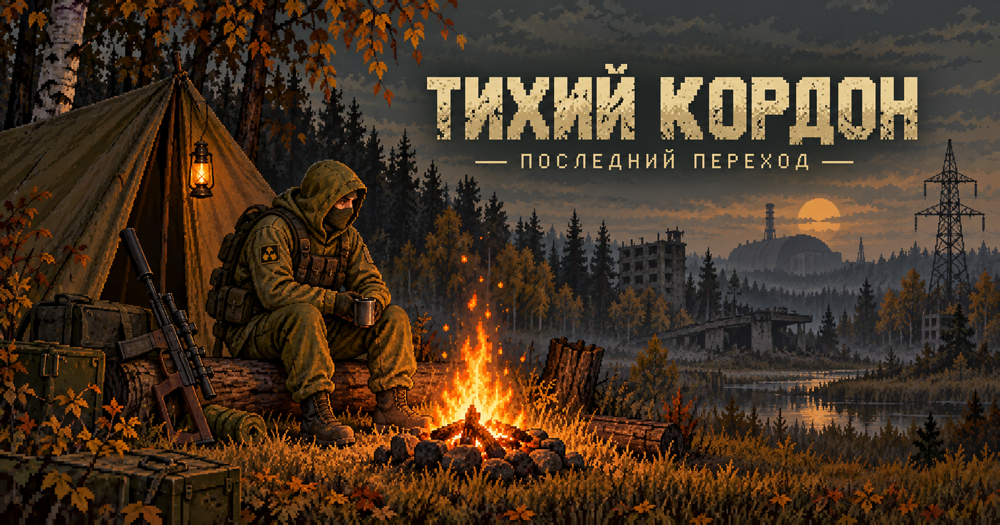

Угли ещё тёплые. Дальше — только Зона.

Доберись от лагеря до укреплённого КПП на востоке Зоны. Там можно заплатить 10 000 ₽ или попытаться прорваться силой. Карта тайного выхода приведёт к безопасному тоннелю.
Осматривай здания, военный склад, технику и другие места. Каждое можно обыскать только один раз. Записки и находки зависят от места; некоторые появляются не в каждой вылазке.
Выносливости хватает примерно на 40 секунд непрерывного движения. Когда силы закончатся, остановись и восстановись. Полный отдых у костра восстанавливает 1–3 секции сердца; аптечка — 1 секцию.
Встречи и аномалии могут быть смертельно опасны. Следи за подготовкой, здоровьем и запасом сил.
Здоровье, деньги и найденные предметы автоматически сохраняются в этом браузере.